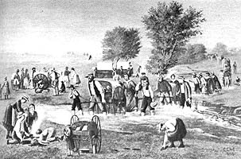
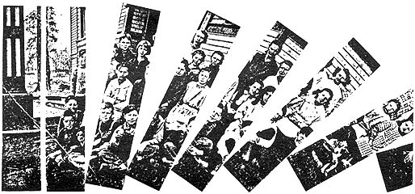
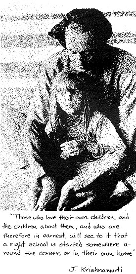
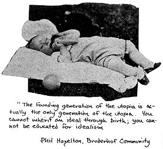
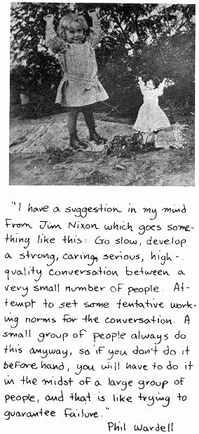
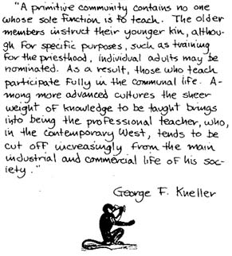

Reprinted by permission from RASBERRY/$3.95 plus 50Q postage/
Freestone Publishing/440 Bohemian High way/Sebastopol, Calif. 95472.
"Getting started" means a few people come together.
For those not already in communities of fighters or farmers, the catalyst may be someone with a sudden conviction about a particularly bad local public school scene; or a graduate student reading Maslow or Holt and becoming inspired; a high school kid in trouble with the police, or fighting with a principal who has demanded that his hair be cut; some public school teachers meeting to share anguish; someone coming out of a particularly revealing acid trip.
Coming together is like a dance, like dogs coming together to sniff each other's vital private premises. Impressions are quickly formed-people's dress., what they bring to eat ("They're still into white sugar!"), whether they take an offered joint, how open and straight they are with their children.
Goals are raised: some want to protect or convey or expand an ideology or social cause; some simply want to add to an existing community; some have a heavy personal need, perhaps loneliness; some have an idea-a vision about what a learning environment could be; some simply can go no further than hating public schools. Some have all these goals.
It's terribly complicated-if you want to look at it that way. But mostly it's exciting and beautiful: sometimes a group with goals exploding outwards like their own growth rates. Every group has its unique mix, its balance, its "magic mood of harmony" waiting to be discovered. Some make it, some don't.
Here are some beginnings:
A school forms in a university-urban area having a high concentration of radicals and Blacks. No one can say exactly how it started-probably someone at the local free university office. But 40 parents with 70 children from 4-14 show up for a meeting called to "explore starting a school where children can follow their own interests rather than a decadent establishment's interests."
No Black parents show (there is one Chinese family-an engineer who feels his children are not learning fast enough in the local school). The rest are about evenly divided between hip-yippies and hip-looking professionals and academians.
They decide to hold a series of picnic-like discussions to find out what they want. Thus begins a long series of forum-like debates with a huge range of views (one of which is that all such discussions are bull crap). But grass flows freely, people begin to know and trust each other, and small groupings, social and work, begin to emerge. The main division is between those who want "structure" and those who don't. Those who do are, by and l arge, those with straight jobs-and money-and they pull out after about a year of meetings and start their own school with two teachers, 20 kids (a strict maximum), teachers paid $400 per month plus a fixed budget for expenses for the school, total control of day-to-day teaching turned over to the teachers, all parents agreeing to meet with teachers twice a month for heavy discussions of everything, including intimate details of feelings about the children and each other.
Those remaining form a Board which forms a very relaxed "plan-it-each-day" school, hires six teachers for 50 children, can't pay them, the teachers "strike", parents struggle to keep it going, and finally they are evicted from a rented hall for non-payment.
Several suburban families meet at a PTA meeting and decide (over drinks, afterwards) to form their own school. Their first decision is to have an encounter group among themselves every Friday evening. This uncovers the usual rocky marriages, sexual attractions, adult needs.
The women decide to form a nonprofit corporation and to raise money through foundations "for the school." For a proposal they write a description of what they want the school to be, based on John Holt, A.S. Neill, and Sylvia Ashton-Warner. It becomes their founding charter, built into a "corporation" which a lawyer friend helps them draw up.
They announce public meetings after forming a Board consisting of themselves, and several professional friends. Their first meeting attracts 20 families with 55 children. Later at a series of town-meeting-like events (voting, motions, etc.) they decide on "policy" which the board is supposed to oversee, on hiring six paid teachers, six volunteers, and on holding monthly pot-luck meetings to raise issues and decide new policies. The meeting is friendly but superficial-the original families retain power, the "newcomers" defer to them with considerable awe.
The board begins looking for teachers, finds only one with experience for $250 a month, hires two mothers for $150 a month (plus free tuition for their children) and three college seniors "with some teaching experience" from the nearby college. Money needs seem critical, so students spearhead a rock-concert benefit to raise money, which loses $400 but a good time is had by all amidst much publicity.
The "teachers" have their first meeting the day before "opening" and find themselves locked in bitter debate over time schedules, room space in their rented building, whether to have classes at all.
The children are pretty much free at first and they seem happy playing. They soon get bored, however, and begin complaining at home. Parents get very uptight, feel only bad vibes from visits to the school, call a series of crisis meetings. The school falls apart by January. The parents blame the one experienced teacher who wanted to coordinate things and arrange compromises between diverse approaches.
Six Native American families in an urban ghetto decide they must have their own school. Their children are becoming Americanized in a particularly revolting way and are falling behind in all academic subjects as well. They are desperate and they pull their children out of public school without fanfare or much discussion.
Three of the women start teaching "basics" in one of the homes. Neighbors complain at the noise (there are 18 kids), the complaint electrifies the group into combat-kids and parents work around the clock printing leaflets, calling on politicians, winning support from radical political groups. They worry occasionally about "not having time for the school" but the children seem far happier and some of the fathers feel they're learning Indian ways just fine.
After three months of this their local public school district informs the police department of the truancy of the 18 children and the parents are ordered to show cause why their children should not be enrolled in the public school. Some decide to fight it, get an ACLU lawyer, who puts them in touch with the New Schools Exchange-they are stunned to find hundreds of schools started by people not too different from themselves. They decide to get a charter, incorporate, become a legal school in order to satisfy compulsory attendance laws. But some parents regard this as selling out, and threaten to fight any probation officer's attempts to take their children to the public school.
The once-unified group drifts apart-into these two camps-fighters and accommodators . . .
About eight families of country people living near a resort area decide their children ought to have some schooling.
Mostly poets and musicians, they gather one Sunday afternoon in the summer. About half are on welfare. They decide start gathering together every morning when September rolls around, and do what whoever shows up wants to do. Someone suggests that they drop acid together and have a heavy learning experience but there's strong disagreement about this and the idea drifts away. Grass is passed freely, then gallons of wine.
The children wander in and out, seem mildly amused.
About the middle of September they begin gathering each morning anywhere from 9:00 to 11:00 A.M. The children have a good time playing; the grown-ups sit in the morning sun drinking tea. Every now and then a parent will read a story to whichever of the children want to hear. There are suggestions about art classes every now and then. Everyone-children and grownups both-seem nervous at any mention of learning "skills like writing and spelling."
After a time, several of the families wish they had more craft teaching and decide to search for a teacher. They find a rather large woman who is a noted craftswoman and invite her to be "a teacher in the school." She asks for $200 and five of the eight families say they'll pay $40 per month each to pay it.
After a few weeks they discover with considerable horror that the woman is a stern disciplinarian, requiring that children who commit themselves to working with her must keep a rigorous schedule. About half the children drift off, including two children from the families who wanted the teacher in the first place.
Several of the parents are angered at having a paid teacher around, and stop coming. The school goes on almost totally centered around the craft lady-about half the kids working with her, and the other kids wandering around and playing.
Three teachers pull out of public school. They know each other well, seem to share common values and educational philosophy.
Through frequent meetings they work out a detailed and explicit set of goals which includes such things as "fostering free expression," "recovering feelings" and "achieving the human potential." Perhaps they talk too much.
They write up their plans, advertise a bit, offering "a school that's an alternative to public schools . . . for parents willing to pay a specific fee." Within two days they have 30 children enrolled for the following Fall.
They devise an intricate program for the school: Interest centers for subjects, craft work areas, field trips to forests and polluted lakes, lots of nature stuff, a garden, and a heavy experiment with children's encounter groups. The children get into it fast in the fall, do a lot of playing with words about bodily processes, sex discussions. There is much good feeling about nature in the school.
When the children begin getting heavily into dreams through the encounter groups, some parents revolt, insisting on control over the teachers. They reconstruct the "Board" with teachers a minority. Then the parents threaten to fire the teachers if they don't slow down the experiments a bit and get on with "more academics." The rest of the parents are passive.
The teachers all quit at the end of the first year, amidst much bitterness. The parents by this time are beginning to enjoy each other at potlucks and decide to "fight to keep the school alive for the sake of the children." They form a committee to search for new teachers but find themselves wrangling interminably over "what should we look for in a teacher."
Meanwhile, back in Freestone . . .
. . . a hot July day, Erik outside the window singing "on the 4th day of Christmas," Stephan designing his tipi, Sasha reading "2001"-and we're deep into the book now, wondering if the pain and trouble that seems to surround free schools and "alternative education" is a function of our perception . . .
Our work is meant to be part of the transition, of "living well"-shared among those of us living in Freestone. Yet it isolates us from each other, especially from the children; Salli gives up wool dyeing and spinning; Robert gives up the garden.
* * *
Alone, the idea of a Long March has an ugly militancy about it. As a transition, as motion, and as a shared trip, we begin to sense the joy of traveling with others. Casting off the colonists of our minds we feel like free travelers, and it's good. We read old pirate stories and talk of wilderness ventures in the olden days. With friends we feel the cool wind from the ocean after the heat of the sauna. . .
Different trips slowly emerge . . . less planning . . . going slower, waiting for others to come together . . . impatience is such a bummer - the transition has its own pace!
Another family joins us. Together we are six children, six adults. We will meet at one house for several days, then at the farm for several days, sharing what we know . . .
We start to propose things - lists of skills that people ought to know - from languages to modes of expression to mastery of technical skills. But a Now takes us over, a warm silence, and we begin to hear the whisper's of each other's intuitions. We remember that "primitive" peoples gave their skills to their children by being what they were, with children around - working, making love, failures and joys bared, shared rituals as routes into heartland areas - the need for skills, for hard learning, simply a necessary preliminary to the real goal of living well. Our talk of goals goes no further than this.
* * *
Our children will learn by using ways of learning they already know: play, fantasy, doing it , experimenting, testing, questioning, failing, connecting what they want to learn with what they want to be . . .
So our "method" is simple: open up, be with each other; find the best people we can, get in contact with them, learn from them. Needs fulfilled enough to allow a climate of love that reduces the killer, fear. We'll invite gypsies walking the same road . . . and we'll always have our music . . . and it will be Now, each moment (longer and longer moments) . . . instead of future expectations.
* * *
When we wanted to learn about layout we asked the help of friends who were heavy into graphics. When our kids asked about making inflatable pillows and tents for their "school" place we asked the Ant Farm for help. A friend who runs a little tourist candy store in Bodega Bay needs a breather now and then and teaches the children to run the business. There are contacts and people everywhere. We can simply trade skills. Profoundly efficient, it turns out: the human scale.
Our friend Michael is going to Canada by himself for a few weeks. He talks of taking Stephan with him, Stephan our tender boy of 10 . "But he's too young, " I protest. "And I don't know Michael that well. " "Great. So get to know him, " says Rasberry. So I do, and soon I must ask: why should Stephan be tied to my growth pace? Am I afraid he'll get ahead of us? Let him go, without guilt. Children should be free to make whatever reality, whatever new constructions they can make. What if it does rain all the time? He'll learn not to go to the Northwest in the fall. Or to dig the rain.
* * *
We cannot teach each other everything that it's possible to learn. Yet in many ways we have more resources - just the 12 of us - than we could ever possibly explore or use. Why are we so closed to it all?
Moving together . . . a few halting spacey steps. . . parting from the dominant culture's basic premises . . . we begin to realize that if we had communities we wouldn't need schools. Our need for an alternative school is a reflection of our alienation from the dominant culture. But our need for a school at all is a reflection of our alienation from ourselves and our brothers and sisters.
So why don't we just improve our lives?
Most colleges and universities have departments of education or psychology with at least one professor (or graduate student) vitally interested in, if not an alternative culture, progressive education.
Seek out such persons and see if they will sponsor (or be on the board, or at least help you) with the development of your school.
Here are a few potential advantages gleaned from schools who have connections:
- prestige-facilitating the dealings with local bureaucracies
- possible locations for housing the school (you'll have to be very convincing, but worth a try)
- free source of film rentals, projectors (the most common use of colleges-order through the professor's department)
- use of college facilities for school benefits
- sub-rosa enrollment of older kids in college classes
- use of athletic areas
- source of teaching assistance
- channel for seeking funds, grant applications, etc.
- printing, maybe use of mailing, telephones, office supplies (if very discreet).
The danger is obvious-you've got to dance a fine line to keep from being assimilated into a heavy Educational Experiment, or teacher training laboratory. (See also New Schools Exchange Occasional Paper, "Education, the University, and the Community" by Allen Graubard, available through NSE)
by Walter Toman
Eric was setting in the middle of the streetcar, and opposite him there was an elegant, elderly gentleman. At the next stop several people got on and hurried to the center in order to get a seat. But none were vacant. The first person who came from one side was a well-dressed, elderly lady; the first person from the other side was a little old woman who was carrying a bundle of kindling wood on her shoulder. The elegant gentleman sitting opposite Eric jumped up in order to make room for the well-dressed lady. But at the last moment he noticed that the old lady with the sticks was about to slip into the vacant seat behind his back, and he blocked her path. The well-dressed lady, who had reached the seat, gave him a smile, whereupon he tipped his hat and she sat down.
After a few seconds, during which the three people concerned began to settle down in their new positions-the old woman put her bundle on the floor, the gentleman put on his gloves and reached for one of the straps, the well-dressed lady pulled her coat down over her knee-after a few seconds, then, Eric got up and offered his seat to the old lady with the wood.
She was a bit surprised, but sat down immediately, and after she had put her bundle to her knees, she moved her hand up to Eric's face and stroked his cheek.
Eric blushed and looked to the left and to the right to see if anyone had noticed it, for he had not wanted the caress. Now the well-dressed lady stood up and offered her seat to the old woman. But since this would only have meant a change of seat for the old woman, she stayed put, but also stroked the well-dressed lady's cheek. Dazed, the elegant lady offered her seat to the elegant gentleman who had given it up for her, but he refused to sit down again. She offered her seat to Eric, and perhaps because he also declined her offer, she stroked his cheek. She also stroked the cheek of the elegant gentleman and Eric's again. Thereupon the plain gentleman who had the window seat next to the well-dressed lady jumped up and offered his seat to her. Then the young lady who was sitting next to the woman with the bundle offered her window seat to her and Eric could not resist the temptation to stroke this young lady's cheek. Smiling, the young lady stroked the cheek of the old woman who had refused her offer, and then turning, she bent far over the back of her seat toward the people on the back seats and stroked the cheeks of two of them.
Suddenly it was impossible to keep the activity confined to the center group of seats, and people on the entire streetcar began to stroke one another and offer one another their seats. Nobody wanted to sit down any more; but still, some people kept getting pushed down into seats. They arose again the moment they thought themselves unobserved, and mingled with the tender jostling of the standees . . .All had their cheeks stroked, everybody stroked somebody else's cheek, and finally all were standing and all the seats were unoccupied. Even the old woman with the wood stood up, held her bundle in one arm, and used her other hand to participate in the caresses which everybody was bestowing with grear feeling. She joined gladly, for after all, she had started it.
At length someone had the idea of letting the ticket conductor sit down; he had already been stroked several times, albeit with some reserve, because he was an official. No sooner had this idea been expressed when combined forces pushed him down into a seat, and he was stroked with such rapidity that he threatened the many people crowding him if they did not at least let him pull the signal cord for the streetcar to proceed.
They reached the next stop, which was the busiest transfer point in town, and this was where everybody got off. They assembled together outside and waved to the conductor; the elegant gentleman even tossed him a rather large bill. They exchanged addresses, so that finally everybody had everybody else's address.
During all this they continued to stroke one another undisturbed, and the first people who had to leave stroked the strangers they met in the street. But these people did not understand, got angry, said something about liquor and lunatics, and the next passers-by who were stroked by the ex-passengers even blazed into fight with them. This so intimidated the ex-streetcar group that they no longer dared to stroke one another's faces, but only stroked hands, and when Eric did stroke the cheek of the young lady who had sat first next to him and then next to the woman with the bundle, she even slapped his face.
That ended it all. The only things left were a few slips with addresses which people had dropped, as well as a few visiting cards, and even these scattered when a light breeze blew over them.
Idea for a Sequence
Center yourself, locate your culture, your context. Center your efforts there. Ignoring common premises and values cuts you off from your most basic source of strength, energy and pleasure.
(Such efforts can be abstract bummers-but they needn't be. There are authentic expressions, and phony expressions.)
Get into it all the way. Is your coming together rooted only in rejection of public schools? And the dominant culture as well? Great, but to what extent are you still dependent on it? And so on. (Schools for those who feel their deepest values have been outraged by public schools tend to be the most energetic in exploring-but not necessarily living-alternatives).
Share goals. Merely breaking out is not creating. The goals are so often new, so beyond what we can express-sometimes because of the joy of it, sometimes because of the fear. Sometimes words just don't work.
But what do you really want? For yourself. For your children. Is your coming together for the purpose of finding a secret agenda for the future? Have your goals gone beyond the restraints of how you were taught-how you learned about learning? (It's ok to have wild goals. They'll change anyway if you let them.)
Then, the "how." How are you going to do it? By yourself? With a group? How?
That's when it begins to get hard. It's easy to spread bull about goals. But people's basic assumptions and beliefs come rolling out pretty fast when they get down to the "how." The "how" has to do with the kind of teaching, space, and mood; how many children; where; and who will do the dirty work. If you had no goals but you did have a humane and coherent "how," you could still create a good school.
* * *
It's something that has to be worked through-there's no "how to" that you can read about. Whether or not your school is ever going to be real starts at this point: when you decide to sit down and work things out. Either with straight out-on-the-table honesty, or devious crap.
* * *
Are you going to have experienced teachers or not? Parents involved? How much? How many children? Normal children? Where? In homes? Rented buildings? In buses (a school without walls)? Tuition, or not? How much? How many teachers for how many children? Why "teachers" at all? Why a "school" at all? What's going on, anyway!
* * *
Then, when it's flowing and you're into it warmly and deeply, perhaps the "who"-"who's going to do this," and "who's going to do that"-will take care of itself. In some schools, things just seem to happen. But usually not, so you'll need to decide about decision-making: who decides, who chooses among options. Who is going to build the envelope within which the school can thrive; who decides when and how to fend off attackers?
* * *
Having a clear decision-making structure is another way of avoiding buck-passing: doing time schedules; making hard choices between too many applicants for a teaching position; dealing with parents who won't (or can't) pay tuition, or who leave their kids at school later and later into the afternoons; talking with the health officials who want to close you down. And then there's the income tax forms to be made out for teachers; the occasional accidents, meetings to be called, equipment to be ordered, kids (and more frequently, parents) who fall apart on your hands.
If you are going to have a School , you'll need some structure. If you're not to be an isolated community-if in fact you face the human misery, the roaring needs of those on heavy cultural transition roads-you'll need some guides through the hard work and difficult decisions you'll have to make.
Our bias, congruent with the Moses bent we're obviously on, is on a "structure" focusing around a coordinator. Moses. Someone good with long marches.
Someone granted power by the community, someone to make day-to-day decisions (within, of course, "policy" set down by the Board). Someone to free the teachers to float with the children full time. Isn't that what it's all about, learning, and loving? To be with someone you love full time, even when you know it's a short time? It never happens when teachers are hassled with everything.
But it has to be organic. Someone rising into the job, feeling right; maybe a parent, teacher, older student; a neighbor wandering in at the right time.
* * *
We will not send our child to a public school, or even to a private one in the usual sense. Together we have managed to learn much the schools couldn't teach us, and unlearn some of what they did. The heart of our knowledge is ours now, and it tells us we must be responsible ourselves for the conditions of our child's growth. This is no romantic hippy daydream. It is a full political act: grounded in theory, chosen as strategy, implemented with all the skills of our consciousness.
We choose to move on the future by freeing our child from the control of the present State. We declare independence from its essential instrument, the System of Education. We will not give our young over to be conditioned in obedience with its programs by any of its representatives, however unofficial, informal and liberal. We will grow our own . And we will grow them as free as we can manage, in situations where we have only to contend with what is in ourselves of the lives we are trying to leave behind.
Several years ago we left the Educational System, where we were cut off from our many selves. We sidestepped the institutions that continue it in society, and began to come together. Now we know that other lives of learning are possible. We can name them. Crippled as we are, we can create their initial conditions: we understand what is involved, and have the skills and the power. For we have been learning to be what we imagine: to live in our bodies, make art with our lives, realize cooperation, and fight Fascism by any means necessary, including the creation of alternate realities, guerilla enclaves of Life in the State of Death.
Good life learning means understanding is integrated in action. We display our knowledge of the culture of specialized roles, with its destructive systems of education, competition and authority, by how we manage to be each other's teachers, siblings and lovers, parents and children, by how we tend and heal and share each other's growth. We must focus at home through this if we are to focus anywhere else and into the future. We will grow our own . And we ourselves must be directly involved in what and how our children learn, for no one else can represent our interest in the future.
For this we must make our lives over: rearrange the ways we work, the styles of our play, the priorities of our time and our love; and move beyond the roles that still bind us from within. To replace what we reject, we must learn anew what we have to share, and grow to make it adequate. The price of making of our lives a school for our children is our own transformation. We believe it is possible, because it is already begun.
Our parents were forced to abandon their children to the part-time uses of the State because they were integrated into its economy and culture, because they saw no alternative, because they were isolated in marriage and privacy and could not organize their lives to be also a school. We know now that no couple can cope alone with even their own relation. We learn in a larger community. To free our young many must come together, to share their powers in critical mass and intimacy. We believe it involves all entering equal as children into the School of a larger Family.
It also means learning economic cooperation, to free space and resources. And it means committing ourselves to political identity and struggle. At present here, one elementary credential can front for up to fifty kids, leaving us with only our own limitations. But when many choose to use this freedom it will be curtailed; and that will be only the beginning. For Fascism is rising softly in this land, you have seen its sign in the black headline of the sky.
The State registered our son with a number at his birth, and designs to own him. Our growing up prepared us for integration into its army, its civil and industrial bureaucracies, its systems of consumption and exploitation, decision and power. It cannot afford us to let our son grow unprepared, let alone prepared for something else. It will not give him over to the gropings of our freedom without a deadly struggle. This will take many forms. To meet them, we must real-ize together who we are and the politics of our necessities and choices. And prepare to resist, to fight for the cradle of our future, and to flourish in and beyond our resistance.
Michael and Karen Rossman
LEARNING POWER TO THE PEOPLE!
Most groups wanting a school meet a few times, hope it feels ok, get into some business details, and get started. A few laboriously go into goals and processes and debates on the nature of learning. Sometimes it's just incredible bullshit, but it's our impression that such schools, bullshit or not, tend to be the ones that thrive. (Maybe if you talk enough about it at meetings you're too tired to bother the kids much.)
At any rate we got to wondering what it would look like if we collected all the free-school goals we could find and coalesced them into one grand set of Cosmic Super Goals. Here it is:
"WE WANT OUR SCHOOL TO . . .
Build or Increase Skills-in order to be able to . . .
• Survive (in wildernesses, "dying environments,"or "in a revolutionary future")
• master the culture ("basics," "the three r's")
• protect oneself from the culture
• attack and change the culture
• put things together ("problem solving," "reasoning," "creating," "learning how to learn")
• share, live in groups, be responsible for yourself, talk straight
Be Therapeutic . . .
• promote health, personal growth
• allow "integration of mental fragments into gestalts
• clear the decks of bad cultural debris
• help fulfill children's needs (i.e., holding them etc.).
• entertaining, fun
Be Anarchistic
• an adventure
• free to do whatever comes up
• discover stuff, explore
Increase Perception
• of the senses
• of the child's sense of the world, of nature
• of other cultures
Foster Spiritual Growth
• be a ground for rituals
• a place for engendering myths "unique to us"
• allow a sense of the holy to flow,
If you're a group of parents, with kids in various states of torture at the hands of public schools and all, perhaps after months of meetings and hashing it over, it's good when you get to the part about bringing in teachers. There are few aspects of starting schools more pleasant, few fraught with more awkwardness.
You think you know what you want: someone warm, loving, open, cool , good with kids. What then when another family wants all that plus someone who can get some heavy academics going as well? Sometimes the first real below-the-surface differences are revealed at this point, and the best skill-and love-is necessary to work it out. Some potential schools split at this point; others don't but should-various power games get going, for example, one group who wants structure capturing a teacher over those who don't. Often the game is incredibly subtle, and you don't find out who "won" until later.
When these issues come up it may be the first plunge off the cliff of defining things, trying to get clear about Educational Philosophy, and all that. (Possibly what you really want is someone to make happen to your kids all the things that didn't happen to you when you were a child-and how can you be rational about that?)
At any rate, often a very difficult context for a search gets built up pretty fast.
* * *
And there will be candidates. There are hundreds of good people advertising through New Schools Exchange and the Teacher Drop-Out Center out of the University of Massachusetts at Amherst.
Good people, looking for a more together life: "We're into graphics, organic gardening, wool dying, and biology. We'll work for what ever you can pay. Prefer a country place in California . . . " Human, hoping for their needs to be fulfilled, seeking community, a vehicle for making a break with their lives.
* * *
Here's some ideas towards making it less awkward.
Don't worry about your children's relationship to the teacher so much. You may be the problem. Your kids are probably masters at dealing with bad teachers. Unless you choose so badly that you get a bully or real mind-freaking artist, relax about the kids and try and get in touch with what you're feeling.
Get clear, yourself, and as a group, about what you really want. Don't expect teachers, especially the soft flowing people working out a new culture for themselves, to resolve differences about life and human nature, learning and discipline, that may exist within your group.
Take time. Self selection is, profoundly, better than any rational or short-term testing method. It takes time: for a person's true pace to come out; for a person to sense others' paces; for fear to drop to its normal level; to get to know people, to know if you feel right to each other, for sharing.
* * *
If you are going to examine prospective teachers, here are some things to consider asking about. Does he or she: view it as a job, or commitment? want parents close, or away? (Consider the degree to which control trips are usually masked and rationalized: the teacher who must block out all parents or helpers "until things are set" usually has extremely impressive reasons for doing so. But it's still a control trip, and that will stand as the most likely "curriculum" for your kids.) What does the candidate expect from parents? (Cleaning up? commitment? real partnership?) Does the prospective teacher need freedom, space, time? Want content-or a child-centered curriculum? What about fights, discipline, keeping schedules?
* * *
Consider: teaching experience, or learning; education, or living. Teachers with verbal skills. And what children really need.
People who can make it with adults. But not with kids.
Going by feel, not by words.
* * *
The best description I ever heard of a teacher was by Jill:
"The person who accepts you completely as you are while still being a model of a more skilled, more conscious, more aware, and more loving person. . . "
* * *
And this is what the kids said they wanted in a teacher:
-He learns from us
-He shows me stuff
-They don't get in our way
-She's there when we need her
-He helps us get the stuff we need
At this point in time there appears to be many teachers-public school drop-outs or those simply pulling the role around them in a soft new way-looking for children to teach, more than there are parents seeking teachers.
Thus, many teachers are starting their own schools.
There are plenty of free-school candidates around, but parents sort of . . . prefer kids where they'll seem safe. (How many times have we said, even recently, hedging our bets, "The children should learn to make it in both culture Whatever that means.)
But advertise, in underground papers, in university communities, and hopeful parents will appear, both parent and teacher wanting the school to be a vehicle: the teacher, a way to make life more authentically new-culture based; the parents perhaps a transition to a less ambiguous posture. Somewhere in there are the kids.
Over-advertise, and you are in the unpleasant situation of"selecting"-you can't select among people you don't know without forcing yourself into a kind of ghastly rationality aid superficiality, as well as ending up with a lot of disappointed parents.
But either way, teachers who start schools are usually "ahead" of the parents, in that they've worked through in a very personal and direct way-at least theoretically-the different teaching modes rooted in the different cultures through which we're passing. And this is a heavy load; one which frequently forces teachers to be prematurely "wise" about what's going on. Jerry Friedberg, discussing Lorillard Children's school, describes the sense of distance between "staff" and parents very vividly:
" . . . The parents came from very different background (that had, in fact, been one of our initial goals), and shared very little of their daily lives, perceptions, and orientation with one another or the staff. With several notable exception (for example, we wound up having three parents on the staff). parents did not, could not, partake of an organic, self-selecting, daily sharing, working-things-through process such as the staff was experiencing. Here was no group of close friends shaping day-to-day common experience as part of an over-all life-way, but rather, by virtue of being a school in the city, a well-enough-intentioned group of heterogeneous people pulling and tugging at one another and the staff.
" . . . Families moved away, new families came in, and everything had to be freshly explained, built from scratch. Operating by consensus on the basis of honesty, caring, and sensitivity is a fragile and difficult business at best; it requires a basic cohesion, common commitment, and a fairly stable group whose growth is organic and gradual . . . "
And what to say about the growing number of kids (all over the country, all by themselves) becoming aware of how they're being screwed by the dominant culture's institutions?
Perhaps this poignant phenomenon has always existed.
Nevertheless, the time is now, the need is vivid. Kids who on their own are seeking free schools can use plenty of non-exploitative help. Take them in. Help them find other escapees with whom to work . . . and be. Help them build envelopes. Help them with space until they learn how to win it themselves. Then stand aside.
Offer apprenticeships. Take them into your families and communes. There are hundreds of children and young folk for every together commune in the country. Refugees from insanity.
* * *
Well again, I suppose if you want to look at it that way, you're already surrounded by Early Pitfalls by now. Actually, that's the chief curriculum for a lot of free schools: anticipating every potential pitfall-and then walking right into them. If you're of such a bent, then you've got the seeds of further trouble sown in your first comings-together.
But there are some weird things that go on right from the start. One of the great paradoxes of free schools is the almost total absence of relevance to the children. It starts in the planning sessions. When the children are brought into free school meetings it is often to say the expected crowd-pleasing diatribes against the public schools, or whatever else the parents happen to be talking about (kids catch onto games-for-filling esteem-needs pretty fast). New schools almost always underestimate (1) the immense skills a child already has by, say, five years of age, and (2) Salli's Children's Liberation Movement notwithstanding, their deep need for adults . . .
And some schools unnecessarily fritter away one of their most precious aspects: the chance to uniquely reflect the interests of a small group and thus experiment with truly new approaches to learning. Think of it! If your school is to be a learning place, and if each person is to be free -free to learn what he wants at his own pace-then realize how different and unique your school must be to truly represent the fullest flowering of the participants.
Another incredible thing is believing you've defined anything in your early meetings-at least defined anything remotely resembling what your school will be in a few months after you open. In a brochure on starting schools, Frank Lindenfeld, Director of Summerhill West in Canoga Park, California, states: " . . . in the course of the meetings the nature of the proposed school will become defined."
We don't think you can know the "nature of the school" until it starts (and then only if you're not looking!) The "what-do-we-want" talk drifts easily into structure and such talk has an insidious habit of sounding more real than the soft, wordless flowing life the talk was supposed to house. The main thing is to get to know each other.
For when you ignore vast differences in premises (like about human beings, about how people learn, about how groups change and so on), then those differences begin to seem pretty real, and they divide after all. It's not the open differences, it's the secret ones. Maybe the ones you don't know about yourself most of all. It's because of fear. You get afraid of what you can't see.
* * *
There are roads and paths and we're all moving, our children faster than we are. The issue is still fluid: which road, how fast, and with whom. Every move towards a solid, flowing, joyful school will be easier if you have some sense of community. Fragile new schools can rarely carry the incredible burden of being the catalyst for a new community. Rather, it has to be the other way around . . .
But there are no good models, no one really knows what's happening now, let alone in the future, no one knows how to reach or make a school, the whole thing is an incredible experiment. Trust yourselves. No longer are there experts "Getting started" is getting your self together. Then your selves.
by Harvey Haber
New Schools Exchange
Trying to write a short statement on "qualities and skills necessary for a free-school coordinator" is like . . . I can think of no short, concise way to write this. A fantasy comes to mind: somewhere in a bad novel there is this nobel Frenchwoman shouting, "You are more dreadful than a Turkish soldier and an English official. No one on earth could embrace you . . ." And that's about it: a combination of English official and Turkish soldier, the ideal coordinator-director for a free school.
Let me explain: I think that in its beginning, formative stages, a despotism (benevolent, of course) is the most desirable system for a new school, primarily because there is nothing so deadly to its vital psyche than to have to appoint committees and have meetings before acting on every terrible little requirement that the school might have. Free school people are so resentful and fearful of ego-trippers and potential-powermongers that they cast themselves into a state of frozen inactivity rather than chance a unilateral decision by some would-be leader. No, let the would-be leader perform the necessary bureaucratic duties first. Then evolve a more democratic system if you wish. Despotism, after all, is a flawed approach and will die an organic death anyway. But if you're especially apprehensive about having a despot around, choose one so overbearingly arrogant-that one quality least acceptable to people with pretensions of freedom-that he will meet his demise sooner than later. He will have served his purpose and then must be cast out with only an infinite martyrdom to sustain himself. Then, with the beginning administrative necessities accomplished, the new school can comfortably strive for that coveted balance, the communal no-one-at-the-helm mood. (Or, retain the arrogant director and learn to love despotism - like Summerhill or Christianity . . .)
|
 |
 |
 |
|
 |
 |
 |